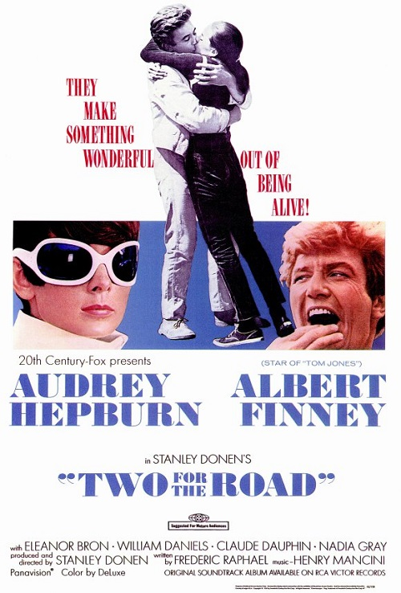

Enjoy Sunday nightat the movies!
Raleigh's oldest and finest nonprofit film society offers classic feature presentations monthly at the Rialto Theatre in Raleigh, NC.
Welcome to The Cinema, Inc.
One of the oldest continuing film societies in the nation, The Cinema, Inc. was founded in 1966 by a group of IBM workers using borrowed projection equipment that was installed in the Raleigh Little Theater. The organization was founded as a nonprofit whose purpose was "the presentation of films of educational, cultural, artistic and historical interest." After about 15 years the organization moved to the Rialto in the city's Five Points neighborhood. The group has been screening selections on the second Sunday of each month ever since. Each screening, which averages over 300 attendees, is accompanied by film notes emailed to members.
Presenting Our 54th Season
You can either download the Season 54 PDF brochure or you can view the webpage with Season 54's details. The details page includes the notes for films already screened. Please note that the 2019-2020 season is sold out. To be added to our mailing list for next season's brochure, send an email to thecinemainc@gmail.com with your name and contact information.
Screening NEXT
-
 March 8, 2020Directed by Jacques Tati; Starring Jacques Tati, Barbara Dennek, Rita Maiden
March 8, 2020Directed by Jacques Tati; Starring Jacques Tati, Barbara Dennek, Rita Maiden
Playtime
France, 1967, 115 min, Color, Not Rated, French w/subtitles
Tati spent years and tons of money building "Tativille", a huge glass-and-steel movie set comprising a modern-day airport, office building, and restaurant. It was as inhuman as possible, clashing in every way with human nature. Tati filled his set with a group of gaggling American tourists, the loping Hulot (Jacques Tati), and a host of other bizarre characters. The film has a chaotic feel; unpredictable like life. Nearly every joke has to do with the clash between man and modern living, and there are plenty. In the restaurant scene, things really get crazy when a wild party continues until dawn. The miraculous ending leaves you smiling about the way we humans have of demolishing order wherever we go.
Film Notes (Pete Corson): If you want to know about Playtime you need to know about its remarkable director, Jacques Tati. Where did John Cleese of Monty Python get his inspiration for the Ministry of Silly Walks? Jacques Tati's character Mr. Hulot, who repeatedly appeared in Tati's films.
Jacques Tati was born Jacques Tatischeff on October 9, 1907, in Le Pecq, France. His early adulthood included national military service, a stint as an apprentice picture framer in his father's business, and playing on a rugby sports team. During these years he discovered his ability to entertain people with his comedic talents. He tried being a standup comic, but eventually he gravitated to filmmaking.
His entrance to filmmaking was as an actor in bit parts. However, in 1946 he and a friend founded Cady-Films, which began producing the films for which he is known. By then his character, Mr. Hulot, was well-developed from his stage work. The raincoat, umbrella, and pipe were to become part of his iconic image, and his awkward and inept social behavior probably was the model for Inspector Clouzot of Blake Edwards' Pink Panther series.
When his third feature-length film, Mr. Hulot's Holiday, came out in 1953, we discovered that his comedy did not need conversation! There is no dialogue until briefly near the end. That film is a series of vignettes on people's behavior and their foibles. The Cinema, Inc. has shown most of Tati's films over our years because they are so original.
So, we come to Playtime, released in 1967. We find the same themes of his previous films: society's obsession with material goods, the superficiality of relationships among France's various social classes, the pressures of work and schedules, and the cold, almost robotic, feeling of the modern buildings and environment. Once again, the film is a series of episodes illuminating the human condition, with little storyline.
Tati built on the outskirts of Paris a mini-city of glass and steel to represent the sterile environment of modern society for his film. It became nicknamed Tativille and took him almost a decade to build. He utilized every financial resource he could find in order to create his film. And yes, it ultimately bankrupted him. But the end result is a film like no other and is the peak of his filmmaking.
He made several other feature-length films before his death in 1982, but Playtime is considered the pinnacle of his worldview. To view it, be prepared for a film that is about people, not a story line like we expect today. Allow it to unfold at its own pace. His nostalgia for a Paris that used to be warm in friendships and stable neighborhoods is shown through his portrayal of the clinical coldness of modern society. He is unique in his vision.Read Roger Ebert's review of Playtime at Great Movies. -
 April 12, 2020Directed by Julie Dash; Starring Cora Lee Day, Alva Rogers, Barbarao
April 12, 2020Directed by Julie Dash; Starring Cora Lee Day, Alva Rogers, Barbarao
Daughters of the Dust
UK/USA, 1991, 112 min, Color, PG
This is the first feature-length film helmed by an African-American woman. It is an impeccably rich view of Gullah Islanders, a culture that few "outsiders" have ever known. Saint Helena island is off the coast of South Carolina where slaves, divorced from mainland influences, formed their own culture, and passed it down to their descendants once slavery was abolished. Over time the men and women of the community decide whether to leave the island or stay. Their stories are told through the West African-derived language as well as through a vocabulary of physical gestures.
-

May 10, 2020Directed by Stanley Donen; Starring Audrey Hepburn, Albert Finney, Eleanor Bron
Two for the Road
UK, 1967, 111 min, Color, Not Rated
This film is one of the most insightful films about the institution of marriage. It doesn't shy away from complex emotions, both in joy and sorrow. The film takes place over five distinct time periods, each chronologically depicting a trip through the French countryside at different times in a couple's lives. The story lines cleverly interweave as cars and hair styles from different periods cut between past and future selves. The strength of the film is that it avoids easy answers and gives the characters room to talk out their problems. They don't reach solutions, but find compromise. Isn't that what relationships boil down to?